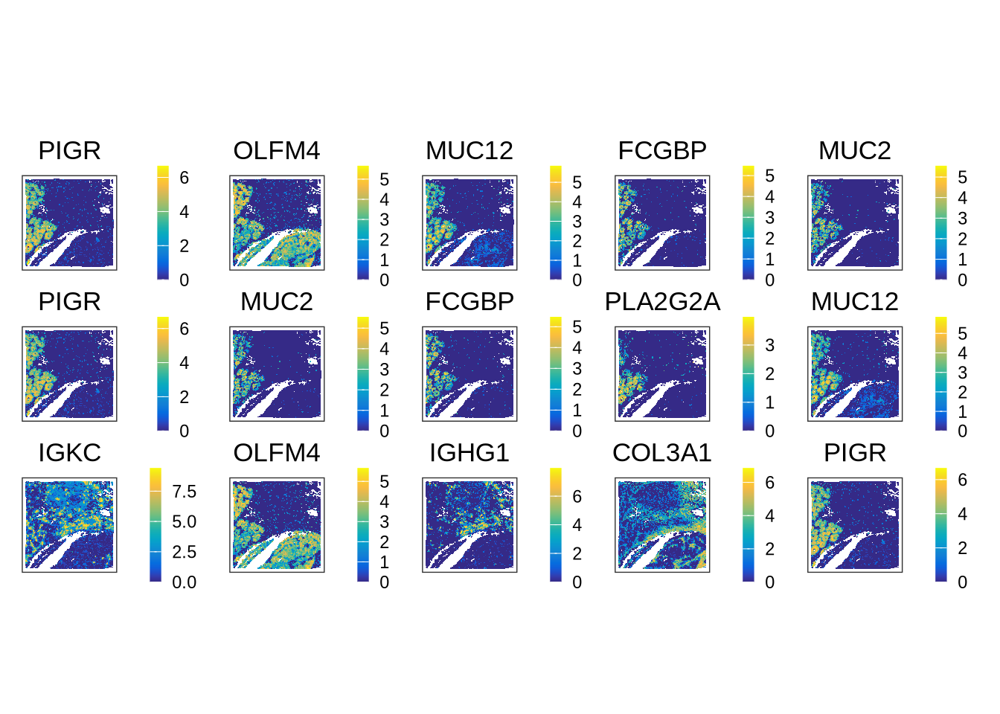
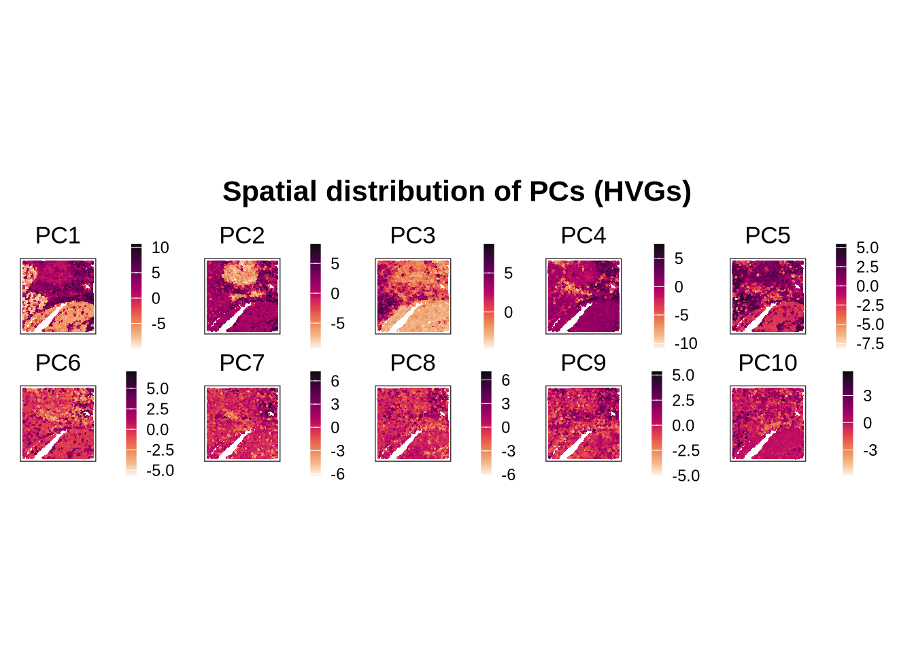
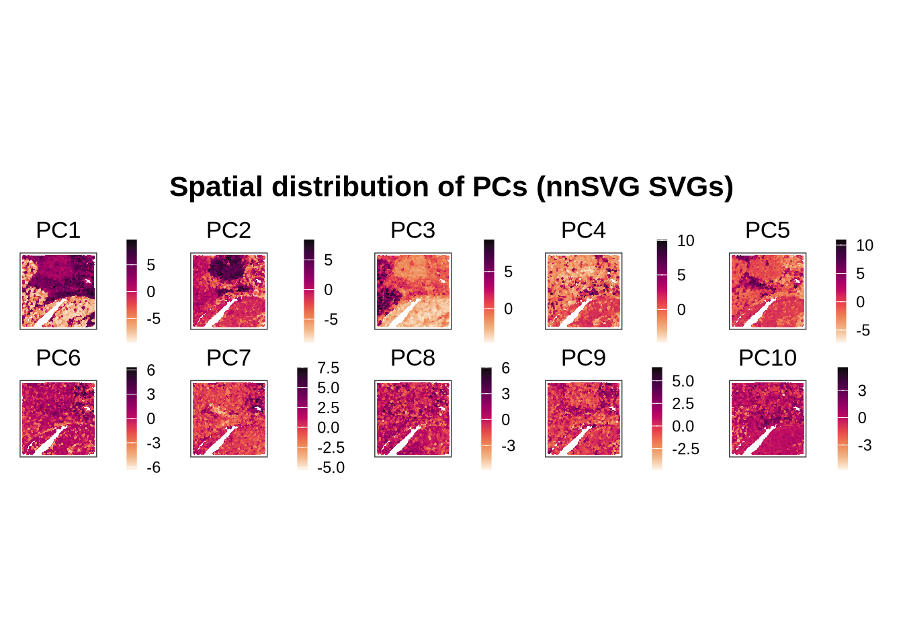
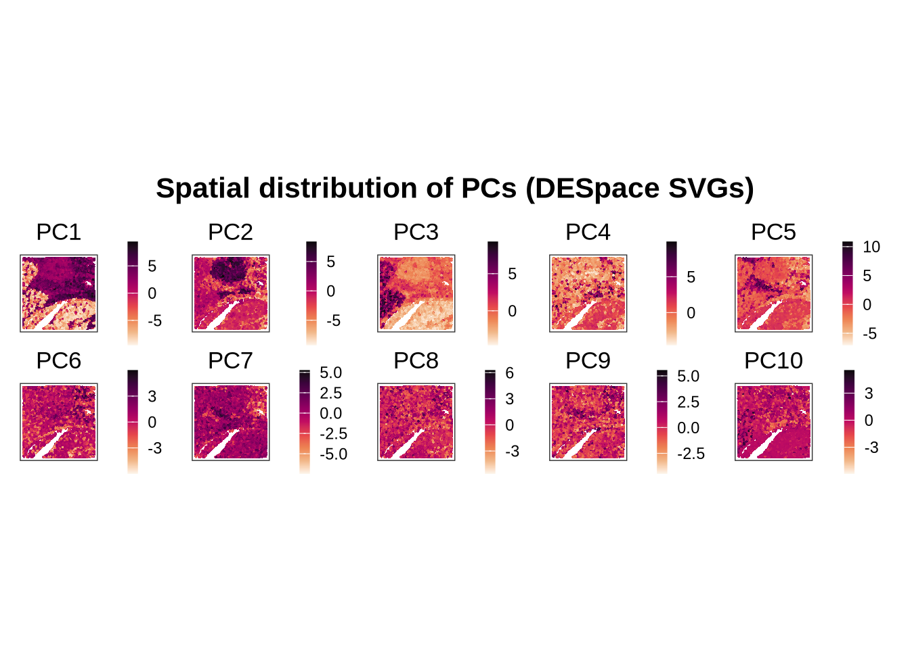
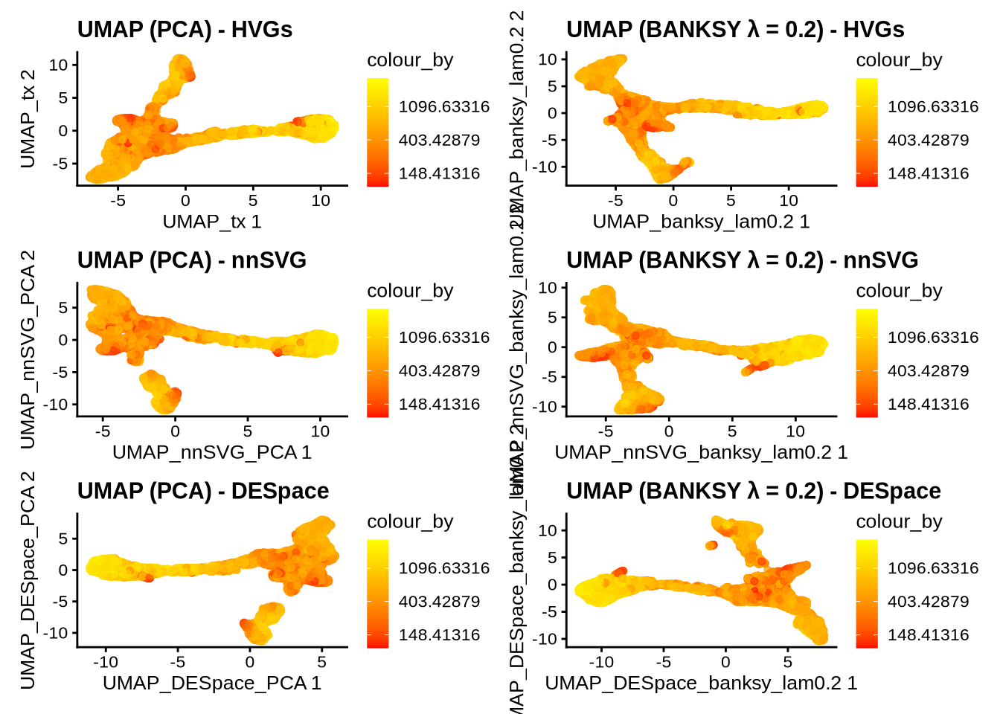
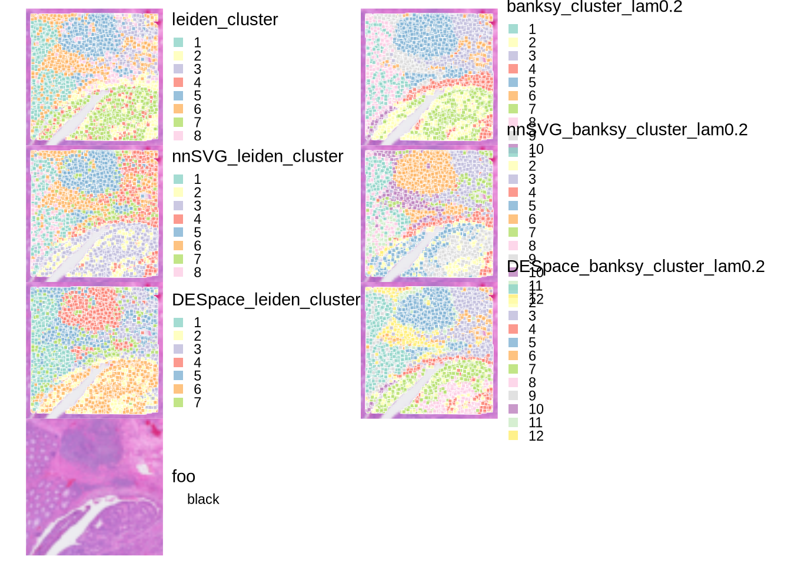

![]()
library(HDF5Array)
library(SpatialExperiment)
library(scran)
library(scater)
library(igraph)
library(Banksy)
library(nnSVG)
library(DESpace)
library(AUCell)
library(msigdbr)
library(pals)
library(ggplot2)
library(ggspavis)
library(patchwork)
library(pheatmap)5. Spatially Variable Gene Detection
Load packages
Load Data
visium_data_path <- file.path(data_path, "raw_colon_cancer")
hdf_data_path <- file.path(data_path, "hdf5_colon_cancer")spe <- loadHDF5SummarizedExperiment(
dir = hdf_data_path,
prefix = "04_clustered_"
)Spatially Variable Gene Detection
Previously, we selected highly variable genes (HVGs) based solely on the mean–variance relationship of gene expression, without incorporating spatial information. However, many methods have since been developed to perform feature selection that explicitly accounts for spatial context. In spatial transcriptomics, it is often more informative to identify genes whose expression varies as a function of spatial location. Such genes are referred to as spatially variable genes (SVGs).
A recently published review paper grouped SVG detection methods into three broad categories:

- Overall SVG detection methods identify genes that exhibit non-random spatial expression patterns across the tissue. These approaches fall into two main classes: Euclidean distance–based methods and graph-based methods. They assess how gene expression varies across spatial spots by modeling the relationship between each gene and its spatial neighborhood. Because they detect general spatial patterns without additional assumptions, these methods are well suited for feature selection in downstream analyses. Representative examples include
SpatialDE,nnSVG, andHotspot. - Cell-type–specific SVG detection methods attribute spatial variation in gene expression to differences in expression across cell types that are unevenly distributed within a tissue section. As a result, these approaches require external cell-type annotations for spatial spots. Examples of methods in this category include
CTSVandC-SIDE. - Spatial-domain marker SVG detection methods focus on identifying genes that are significantly upregulated in specific spatial domains relative to others. These approaches require prior spatial domain annotations, which are typically inferred from the same spatial transcriptomics dataset. Examples include
DESpaceandSpaGCN.
nnSVG
nnSVG detects overall SVGs by modeling spatial gene expression using a nearest-neighbor Gaussian processes.
Since it uses nearest-neighbor Gaussian process, it is more scalable than algorithms using full Gaussian process such as SpatialDE. The computational cost of nnSVG is \(O(n \times m^3)\), where \(n\) is the number of spots and \(m\) is the number of nearest neighbors considered.
Since nnSVG takes a while to run, we will use only the genes that were selected with nnSVG::filter_genes() for SVG detection. This function excludes mitochondrial genes and lowly expressed genes.
set.seed(123)
spe_nnsvg_genes_filtered <- spe
rowData(spe_nnsvg_genes_filtered)$gene_name <- rowData(spe_nnsvg_genes_filtered)$Symbol
spe_nnsvg_genes_filtered <- filter_genes(spe_nnsvg_genes_filtered)
spe_nnsvg_genes_filtered <- nnSVG(spe_nnsvg_genes_filtered, n_threads = 20)res_nnSVG <- rowData(spe_nnsvg_genes_filtered)
res_nnSVG <- res_nnSVG[order(res_nnSVG$rank), ]
top_nnSVG <- res_nnSVG$Symbol[seq_len(5)]
top_nnSVG[1] "PIGR" "OLFM4" "MUC12" "FCGBP" "MUC2" The top five SVGs detected by nnSVG are: PIGR, OLFM4, MUC12, FCGBP, and MUC2.
DESpace
DESpace detects spatial-domain marker SVGs. Instead of using spatial coordinates directly, it takes spatial domains as proxy for spatial information. It fits a negative binomial model, with spatial domain information as covariates.
Here, we will use BANKSY clusters (λ = 0.2) as spatial domain annotations for DESpace.
res_DESpace <- svg_test(spe, cluster_col="banksy_cluster_lam0.2", verbose = TRUE)top_DESpace <- res_DESpace$gene_results$gene_id[seq_len(5)]
top_DESpace[1] "PIGR" "MUC2" "FCGBP" "PLA2G2A" "MUC12" The top five SVGs detected by DESpace are: PIGR, MUC2, FCGBP, PLA2G2A, and MUC12, which overlap substantially with those detected by nnSVG.
Comparing HVGs and SVGs
As we did in the previous sessions, we can extract the top highly variable genes (HVGs) selected based on the mean–variance relationship.
dec <- modelGeneVarByPoisson(spe)
is.mito <- rownames(spe)[grepl("^MT-", rownames(spe))]
dec <- dec[!row.names(dec) %in% is.mito, ]
top_HVG <- row.names(dec[order(dec$bio, decreasing = T), ])[1:5]
top_HVG[1] "IGKC" "OLFM4" "IGHG1" "COL3A1" "PIGR" We can now visualize the expression patterns of the top HVGs and SVGs detected by nnSVG and DESpace.
gs <- c(
nnSVG=top_nnSVG,
DESpace=top_DESpace,
HVGs=top_HVG
)
# Expression plots for each top gene
ps <- lapply(seq_along(gs), \(.) {
plotCoords(spe,
point_size=0,
annotate=gs[.],
assay_name="logcounts",
feature_names="Symbol")
})
wrap_plots(ps, nrow=3) & theme(
legend.key.width=unit(0.4, "lines"),
legend.key.height=unit(0.8, "lines")) &
scale_color_gradientn(colors = pals::parula())
The first row shows the spatial expression patterns of the top five SVGs detected by nnSVG, the second row shows those detected by DESpace, and the third row shows those of the top five HVGs. Overall, the top SVGs tend to highlight epithelial regions more specifically than the HVGs.
Adding SVG results to spe object
To facilitate downstream analyses, we can add the SVG detection results from nnSVG and DESpace to the rowData of the original spe object. For nnSVG, we will use the adjusted p-values (padj) to identify significant SVGs (padj < 0.05). For DESpace, we will use the top 1,000 SVGs as the total number of significant SVGs (FDR < 0.05) is quite large. Also, we exclude mitochonderial genes from the SVG lists.
# nnSVG
svgs_nnSVG <- rowData(spe_nnsvg_genes_filtered)$Symbol[
which(rowData(spe_nnsvg_genes_filtered)$padj < 0.05)
]
rowData(spe)$svg_nnSVG <- rowData(spe)$Symbol %in% svgs_nnSVG
# DESpace
DESpace_results <- res_DESpace$gene_results
DESpace_results <- DESpace_results[!row.names(DESpace_results) %in% is.mito, ]
svgs_DESpace <- DESpace_results$gene_id[seq_len(1000)]
rowData(spe)$svg_DESpace <- rowData(spe)$Symbol %in% svgs_DESpaceDimensionality Reduction with SVGs
We can also use the SVGs detected by nnSVG or DESpace for dimensionality reduction, similar to what we did with HVGs in the previous session.
PCA
For PCA, we will choose the first 10 PCs.
# For SVGs from nnSVG
spe <- runPCA(
spe,
ncomponents = 10,
subset_row = rowData(spe)$svg_nnSVG,
name = "PCA_nnSVG")
# For SVGs from DESpace
spe <- runPCA(
spe,
ncomponents = 10,
subset_row = rowData(spe)$svg_DESpace,
name = "PCA_DESpace")We will examine the spatial distribution of the PCs obtained from HVGs and SVGs.
PCA visualization function
plot_pcs_on_coords <- function(spe, pcs_name, title = "Spatial distribution of PCs") {
# Get the PCA results
pcs <- reducedDim(spe, pcs_name)
# Visualize PCs on the tissue slice coordinates
ps <- lapply(
colnames(pcs),
\(.) {
spe[[.]] <- pcs[, .]
plotCoords(spe, annotate = .)
}
)
# Arrange the plots and customize colors
(
patchwork::wrap_plots(ps, nrow = 2) &
theme(
legend.key.width = unit(0.4, "lines"),
legend.key.height = unit(0.8, "lines")
) &
scale_color_gradientn(colors = rev(hcl.colors(9, "Rocket")))
) +
patchwork::plot_annotation(
title = title,
theme = theme(plot.title = element_text(hjust = 0.5, size = 16, face = "bold")))
}PCA visualization
plot_pcs_on_coords(
spe,
pcs_name = "PCA",
title = "Spatial distribution of PCs (HVGs)"
)
plot_pcs_on_coords(
spe,
pcs_name = "PCA_nnSVG",
title = "Spatial distribution of PCs (nnSVG SVGs)"
)
plot_pcs_on_coords(
spe,
pcs_name = "PCA_DESpace",
title = "Spatial distribution of PCs (DESpace SVGs)"
)
PCs obtained from HVGs and SVGs look largely similar.
BANKSY
# Parameters for BANKSY
k <- 20
l <- 0.2
a <- "logcounts"
xy <- c("array_row", "array_col")
npcs <- 10
cores <- 4
set.seed(142857)
svg_columns <- list(
nnSVG = "svg_nnSVG",
DESpace = "svg_DESpace"
)
for (label in names(svg_columns)) {
flag <- svg_columns[[label]]
idx <- rowData(spe)[[flag]]
if (is.null(idx) || !any(idx, na.rm = TRUE)) next
tmp <- computeBanksy(
spe[idx, ],
assay_name = a,
coord_names = xy,
k_geom = k,
parallel = TRUE,
num_cores = cores
)
tmp <- runBanksyPCA(tmp, lambda = l, npcs = npcs)
reducedDim(spe, paste0("PCA_", label, "_banksy_lam", l)) <-
reducedDim(tmp, paste0("PCA_M0_lam", l))
}UMAP
For visualization, we run UMAP on the PCs obtained from both standard PCA and BANKSY.
# UMAP
spe <- runUMAP(spe, dimred="PCA_nnSVG", name="UMAP_nnSVG_PCA")
spe <- runUMAP(spe, dimred="PCA_nnSVG_banksy_lam0.2", name="UMAP_nnSVG_banksy_lam0.2")
spe <- runUMAP(spe, dimred="PCA_DESpace", name="UMAP_DESpace_PCA")
spe <- runUMAP(spe, dimred="PCA_DESpace_banksy_lam0.2", name="UMAP_DESpace_banksy_lam0.2")p1 <- plotReducedDim(spe, dimred = "UMAP_tx", colour_by = "detected") +
scale_colour_gradient(trans = "log", high = "yellow", low = "red") +
labs(title = "UMAP (PCA) - HVGs")
p2 <- plotReducedDim(spe, dimred = "UMAP_banksy_lam0.2", colour_by = "detected") +
scale_colour_gradient(trans = "log", high = "yellow", low = "red") +
labs(title = "UMAP (BANKSY λ = 0.2) - HVGs")
p3 <- plotReducedDim(spe, dimred = "UMAP_nnSVG_PCA", colour_by = "detected") +
scale_colour_gradient(trans = "log", high = "yellow", low = "red") +
labs(title = "UMAP (PCA) - nnSVG")
p4 <- plotReducedDim(spe, dimred = "UMAP_nnSVG_banksy_lam0.2", colour_by = "detected") +
scale_colour_gradient(trans = "log", high = "yellow", low = "red") +
labs(title = "UMAP (BANKSY λ = 0.2) - nnSVG")
p5 <- plotReducedDim(spe, dimred = "UMAP_DESpace_PCA", colour_by = "detected") +
scale_colour_gradient(trans = "log", high = "yellow", low = "red") +
labs(title = "UMAP (PCA) - DESpace")
p6 <- plotReducedDim(spe, dimred = "UMAP_DESpace_banksy_lam0.2", colour_by = "detected") +
scale_colour_gradient(trans = "log", high = "yellow", low = "red") +
labs(title = "UMAP (BANKSY λ = 0.2) - DESpace")
p1 + p2 + p3 + p4 + p5 + p6 +
plot_layout(ncol = 2)
Clustering
We can also perform clustering based on the PCs obtained from SVGs using either standard PCA or BANKSY.
clustering_list <- list(
nnSVG_leiden_cluster = "PCA_nnSVG",
nnSVG_banksy_cluster_lam0.2 = "PCA_nnSVG_banksy_lam0.2",
DESpace_leiden_cluster = "PCA_DESpace",
DESpace_banksy_cluster_lam0.2 = "PCA_DESpace_banksy_lam0.2"
)
for (label in names(clustering_list)) {
dimred_name <- clustering_list[[label]]
snn_graph <- buildSNNGraph(spe, use.dimred = dimred_name, type="jaccard", k = 20)
clusters <- cluster_leiden(snn_graph, objective_function="modularity", resolution = 0.6)
spe[[label]] <- factor(clusters$membership)
}Visualize clustering results
ks <- c(
"leiden_cluster", "banksy_cluster_lam0.2",
"nnSVG_leiden_cluster", "nnSVG_banksy_cluster_lam0.2",
"DESpace_leiden_cluster", "DESpace_banksy_cluster_lam0.2")
# Plot spatial distribution of clusters for each method
plots <- c(lapply(ks, \(.) {
plt <- plotVisium(spe, annotate=., zoom = T, point_shape = 22, point_size = 1)
plt
}) ,
plotVisium(spe, zoom = T, spots=FALSE )) # add a plot of the tissue without spots
# combine plots
plots |> wrap_plots(ncol=2) &
scale_fill_brewer(palette = "Set3") &
theme(legend.key.size=unit(0, "lines"), legend.justification="left")
Save the data with SVG results
saveHDF5SummarizedExperiment(
spe,
dir = hdf_data_path,
prefix = "05_svg_",
replace = TRUE,
chunkdim = NULL,
level = NULL,
as.sparse = NA,
verbose = NA
)
Expand for Session Info
sessionInfo()R version 4.5.2 (2025-10-31)
Platform: x86_64-conda-linux-gnu
Running under: Ubuntu 22.04.4 LTS
Matrix products: default
BLAS/LAPACK: /home/kim/workspace/spatial_transcriptomics/.pixi/envs/default/lib/libopenblasp-r0.3.30.so; LAPACK version 3.12.0
locale:
[1] LC_CTYPE=en_US.UTF-8 LC_NUMERIC=C
[3] LC_TIME=de_CH.UTF-8 LC_COLLATE=en_US.UTF-8
[5] LC_MONETARY=de_CH.UTF-8 LC_MESSAGES=en_US.UTF-8
[7] LC_PAPER=de_CH.UTF-8 LC_NAME=C
[9] LC_ADDRESS=C LC_TELEPHONE=C
[11] LC_MEASUREMENT=de_CH.UTF-8 LC_IDENTIFICATION=C
time zone: Europe/Zurich
tzcode source: system (glibc)
attached base packages:
[1] stats4 stats graphics grDevices utils datasets methods
[8] base
other attached packages:
[1] pheatmap_1.0.13 patchwork_1.3.2
[3] ggspavis_1.16.0 pals_1.10
[5] msigdbr_25.1.1 AUCell_1.32.0
[7] DESpace_2.2.2 nnSVG_1.14.0
[9] Banksy_1.6.0 igraph_2.2.1
[11] scater_1.38.0 ggplot2_4.0.0
[13] scran_1.38.0 scuttle_1.20.0
[15] SpatialExperiment_1.20.0 SingleCellExperiment_1.32.0
[17] SummarizedExperiment_1.40.0 Biobase_2.70.0
[19] GenomicRanges_1.62.0 Seqinfo_1.0.0
[21] HDF5Array_1.38.0 h5mread_1.2.0
[23] rhdf5_2.54.0 DelayedArray_0.36.0
[25] SparseArray_1.10.0 S4Arrays_1.10.0
[27] IRanges_2.44.0 abind_1.4-8
[29] S4Vectors_0.48.0 MatrixGenerics_1.22.0
[31] matrixStats_1.5.0 BiocGenerics_0.56.0
[33] generics_0.1.4 Matrix_1.7-3
loaded via a namespace (and not attached):
[1] RcppAnnoy_0.0.22 RcppHungarian_0.3
[3] tibble_3.3.0 R.oo_1.27.1
[5] polyclip_1.10-7 graph_1.88.0
[7] XML_3.99-0.19 lifecycle_1.0.4
[9] sf_1.0-21 aricode_1.0.3
[11] edgeR_4.8.0 lattice_0.22-7
[13] MASS_7.3-65 magrittr_2.0.4
[15] limma_3.66.0 rmarkdown_2.30
[17] yaml_2.3.10 metapod_1.18.0
[19] ggside_0.4.0 spatstat.sparse_3.1-0
[21] cowplot_1.2.0 mapproj_1.2.12
[23] pbapply_1.7-4 DBI_1.2.3
[25] RColorBrewer_1.1-3 maps_3.4.3
[27] R.utils_2.13.0 tweenr_2.0.3
[29] ggrepel_0.9.6 irlba_2.3.5.1
[31] spatstat.utils_3.2-0 terra_1.8-70
[33] units_1.0-0 goftest_1.2-3
[35] spatstat.random_3.4-2 annotate_1.88.0
[37] dqrng_0.4.1 DelayedMatrixStats_1.32.0
[39] codetools_0.2-20 ggforce_0.5.0
[41] tidyselect_1.2.1 farver_2.1.2
[43] ScaledMatrix_1.18.0 viridis_0.6.5
[45] spatstat.explore_3.5-3 jsonlite_2.0.0
[47] BiocNeighbors_2.4.0 e1071_1.7-16
[49] dbscan_1.2.3 tools_4.5.2
[51] ggnewscale_0.5.2 Rcpp_1.1.0
[53] glue_1.8.0 gridExtra_2.3
[55] xfun_0.53 dplyr_1.1.4
[57] withr_3.0.2 fastmap_1.2.0
[59] rhdf5filters_1.22.0 bluster_1.20.0
[61] digest_0.6.37 rsvd_1.0.5
[63] R6_2.6.1 colorspace_2.1-2
[65] sccore_1.0.6 tensor_1.5.1
[67] dichromat_2.0-0.1 spatstat.data_3.1-9
[69] RSQLite_2.4.3 R.methodsS3_1.8.2
[71] data.table_1.17.8 class_7.3-23
[73] httr_1.4.7 htmlwidgets_1.6.4
[75] uwot_0.2.3 pkgconfig_2.0.3
[77] gtable_0.3.6 rdist_0.0.5
[79] blob_1.2.4 S7_0.2.0
[81] BRISC_1.0.6 XVector_0.50.0
[83] htmltools_0.5.8.1 GSEABase_1.72.0
[85] scales_1.4.0 png_0.1-8
[87] spatstat.univar_3.1-4 knitr_1.50
[89] rjson_0.2.23 curl_7.0.0
[91] nlme_3.1-168 proxy_0.4-27
[93] cachem_1.1.0 KernSmooth_2.23-26
[95] parallel_4.5.2 vipor_0.4.7
[97] AnnotationDbi_1.72.0 pillar_1.11.1
[99] grid_4.5.2 vctrs_0.6.5
[101] RANN_2.6.2 BiocSingular_1.26.0
[103] beachmat_2.26.0 xtable_1.8-4
[105] cluster_2.1.8.1 beeswarm_0.4.0
[107] evaluate_1.0.5 magick_2.9.0
[109] cli_3.6.5 locfit_1.5-9.12
[111] compiler_4.5.2 rlang_1.1.6
[113] crayon_1.5.3 labeling_0.4.3
[115] mclust_6.1.1 classInt_0.4-11
[117] ggbeeswarm_0.7.2 viridisLite_0.4.2
[119] deldir_2.0-4 BiocParallel_1.44.0
[121] babelgene_22.9 assertthat_0.2.1
[123] Biostrings_2.78.0 spatstat.geom_3.6-0
[125] sparseMatrixStats_1.22.0 bit64_4.6.0-1
[127] Rhdf5lib_1.32.0 KEGGREST_1.50.0
[129] statmod_1.5.1 leidenAlg_1.1.5
[131] memoise_2.0.1 bit_4.6.0 Citation
BibTeX citation:
@online{kim2025,
author = {Kim, Youngjun},
title = {Spatial {Transcriptomics} {Data} {Analysis} {Tutorial} 05:
{Spatially} {Variable} {Gene} {Detection}},
date = {2025-12-22},
url = {https://yjkim93.github.io/posts/2025-12-22-spatial-transcriptomics-05-svgs/},
langid = {en}
}
For attribution, please cite this work as:
Kim, Youngjun. 2025. “Spatial Transcriptomics Data Analysis
Tutorial 05: Spatially Variable Gene Detection.” December 22,
2025. https://yjkim93.github.io/posts/2025-12-22-spatial-transcriptomics-05-svgs/.